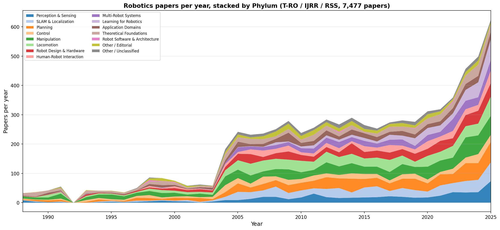
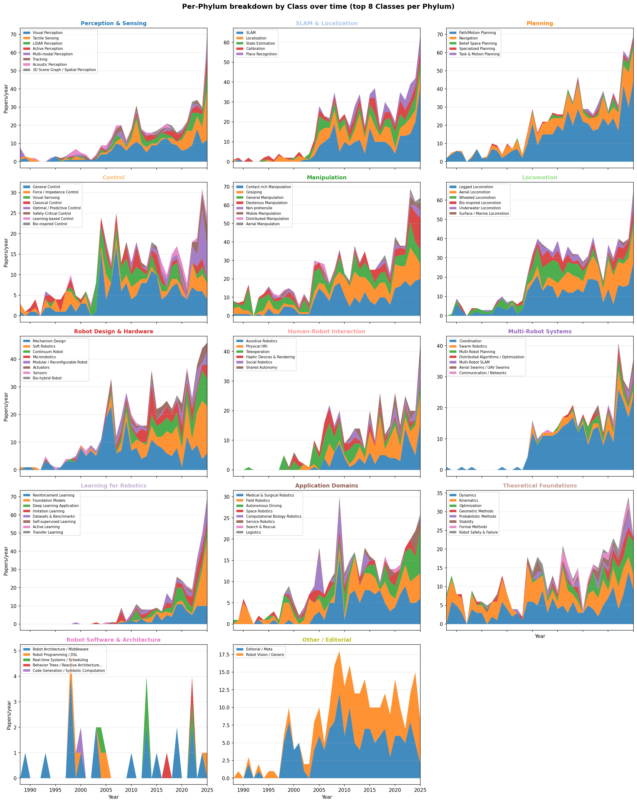
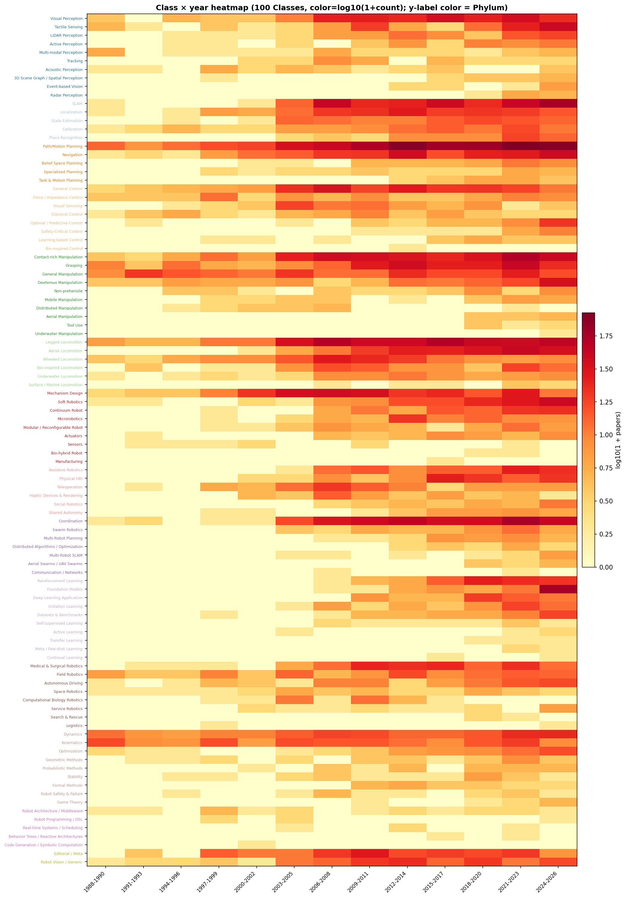
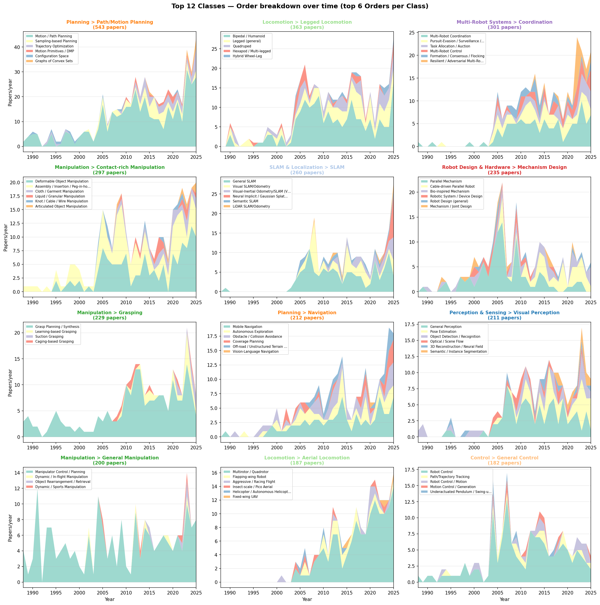

7,477편의 로봇공학 논문 (T-RO / IJRR / RSS, 1988~2025)을
13 Phylum × ~100 Class × ~330 Order × Genus 4-depth 시맨틱 계통도로 분류한 EDA 결과.
X = 1988~2025, Y = 연간 논문 수 (stacked). 색 = 13개 Phylum + Editorial + Unclassified.

13 Phylum 각각에 대해 패널 1개. 각 패널 안에서 top 8 Class가 stacked area.

행 = 모든 Class (Phylum 그룹 순서), 열 = 3년 bucket. 색 = log10(1 + 논문 수). Y라벨 색 = Phylum.

가장 큰 12개 Class에 대해 각각 mini panel. 내부에서 top 6 Order가 stacked area.

호버하면 wedge 강조 + 툴팁. 클릭으로 계열 선택 후 ← → ↑ ↓ 화살표로 이웃 셀 탐색. Esc로 해제.
생물 계통도 스타일. 안쪽 ring = Phylum, 중간 = Class, 바깥 = Order. Wedge 각도 ∝ 논문 수. 프린트/공유용 벡터.
Phylum → Class → Order → Genus 4단계를 클릭/호버로 드릴다운. Plotly의 sunburst 구현.
전체 7,477편 중 13 Phylum 각각의 첫 등장 연도, 피크 연도/논문 수, 그리고 2016-20 → 2021-25 5년 성장률.
| Phylum | Total | First | Peak | 2016-20 | 2021-25 | Growth |
|---|---|---|---|---|---|---|
| Perception & Sensing | 554 | 1988 | 2024 (51) | 122 | 213 | +74.6% |
| SLAM & Localization | 670 | 1988 | 2025 (74) | 144 | 242 | +68.1% |
| Planning | 835 | 1988 | 2025 (95) | 183 | 280 | +53.0% |
| Control | 441 | 1988 | 2025 (54) | 96 | 156 | +62.5% |
| Manipulation | 934 | 1988 | 2024 (113) | 198 | 312 | +57.6% |
| Locomotion | 842 | 1988 | 2025 (116) | 177 | 313 | +76.8% |
| Robot Design & Hardware | 623 | 1988 | 2025 (74) | 141 | 230 | +63.1% |
| Human-Robot Interaction | 395 | 1996 | 2025 (45) | 93 | 137 | +47.3% |
| Multi-Robot Systems | 408 | 1988 | 2024 (52) | 73 | 126 | +72.6% |
| Learning for Robotics | 354 | 2008 | 2025 (76) | 113 | 221 | +95.6% |
| Application Domains | 396 | 1996 | 2024 (45) | 85 | 144 | +69.4% |
| Theoretical Foundations | 491 | 1988 | 2009 (42) | 73 | 63 | −13.7% |
| Robot Software & Architecture | 30 | 1989 | 2024 (5) | 3 | 8 | +166.7% |
최근 5년간 논문 수 기준 Top 10 Class.
| # | Phylum | Class | Papers |
|---|---|---|---|
| 1 | Planning | Path/Motion Planning | 178 |
| 2 | Multi-Robot Systems | Coordination | 111 |
| 3 | Manipulation | Contact-rich Manipulation | 105 |
| 4 | SLAM & Localization | SLAM | 102 |
| 5 | Locomotion | Legged Locomotion | 95 |
| 6 | Locomotion | Aerial Locomotion | 87 |
| 7 | Manipulation | Grasping | 75 |
| 8 | Robot Design & Hardware | Soft Robotics | 73 |
| 9 | Planning | Navigation | 70 |
| 10 | Learning for Robotics | Foundation Models | 70 |
한때 활발했지만 최근 거의 사라진 Class.
| Phylum > Class | Pre-2015 | Post-2020 | Retain |
|---|---|---|---|
| Control > Visual Servoing | 50 | 4 | 8.0% |
| Application > Computational Biology Robotics | 28 | 0 | 0.0% |
키워드 매칭으로 각 핫 카테고리의 first paper year + 누적 카운트.
| Category | First year | Total | 2021-25 cum |
|---|---|---|---|
| Soft Robotics | 1996 | 83 | 56 |
| Concentric Tube Robots | 2010 | 20 | 6 |
| Visual-Inertial Odometry (VIO) | 2013 | 15 | 5 |
| Sim-to-Real Legged Locomotion | 2018 | 21 | 18 |
| LiDAR-Inertial Odometry (LIO) | 2022 | 6 | 6 |
| Vision-Language-Action (VLA) | 2023 | 9 | 9 |
| Diffusion Policies | 2023 | 15 | 15 |
| Foundation Models for Robotics | 2023 | 7 | 7 |
| 3D Gaussian Splatting SLAM | 2024 | 8 | 8 |
| Humanoid Whole-Body Control | 2025 | 4 | 4 |
각 Phylum의 최다 인용 논문 (시간 보정 X).
| Phylum | Cites | Year | Title |
|---|---|---|---|
| Manipulation | 943 | 2008 | Robotic Grasping of Novel Objects using Vision |
| Robot Design & Hardware | 934 | 2006 | Kinematics for multisection continuum robots |
| Application Domains | 926 | 2008 | Path Planning for Autonomous Vehicles in Unknown Semi-structured Environments |
| Locomotion | 902 | 2008 | The First Takeoff of a Biologically Inspired At-Scale Robotic Insect |
| Multi-Robot Systems | 855 | 2008 | Distributed Coordination Control of Multiagent Systems While Preserving Connectedness |
| Learning for Robotics | 759 | 2011 | Learning Stable Nonlinear Dynamical Systems With Gaussian Mixture Models |
| Human-Robot Interaction | 588 | 2008 | Design and Control of a Powered Transfemoral Prosthesis |
| Robot Software & Architecture | 519 | 1998 | An Architecture for Autonomy |
| Theoretical Foundations | 394 | 2007 | Gaussian Processes for Signal Strength-Based Location Estimation |
각 저널의 Phylum 비중 (%).
| Venue | Top 1 | Top 2 | Top 3 |
|---|---|---|---|
| T-RO | Locomotion (12.7%) | Manipulation (11.6%) | Robot Design & Hardware (11.4%) |
| IJRR | Manipulation (13.9%) | Planning (11.9%) | Locomotion (11.5%) |
| RSS | Planning (14.1%) | Learning for Robotics (13.1%) | Manipulation (12.0%) |
각 Phylum의 평균 인용 vs 전체 평균 (67.7).
| Phylum | Mean | Median | × overall |
|---|---|---|---|
| SLAM & Localization | 85.6 | 42 | ×1.26 |
| Locomotion | 85.0 | 37 | ×1.26 |
| Robot Design & Hardware | 83.3 | 36 | ×1.23 |
| Human-Robot Interaction | 77.0 | 35 | ×1.14 |
| Application Domains | 76.0 | 34 | ×1.12 |
| Control | 66.2 | 32 | ×0.98 |
| Planning | 64.7 | 32 | ×0.96 |
| Manipulation | 64.3 | 31 | ×0.95 |
| Multi-Robot Systems | 63.8 | 29 | ×0.94 |
| Perception & Sensing | 59.1 | 26 | ×0.87 |
| Robot Software & Architecture | 58.3 | 29 | ×0.86 |
| Learning for Robotics | 47.5 | 9 | ×0.70 |
| Theoretical Foundations | 44.8 | 21 | ×0.66 |